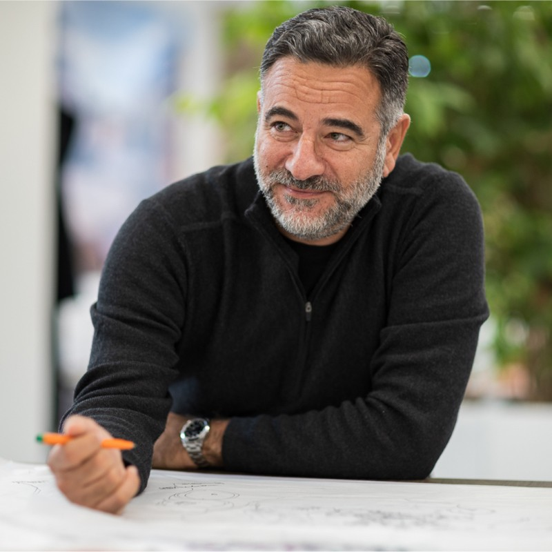
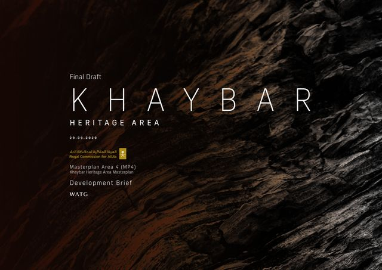
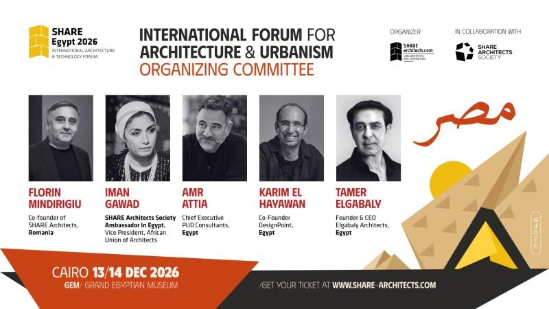
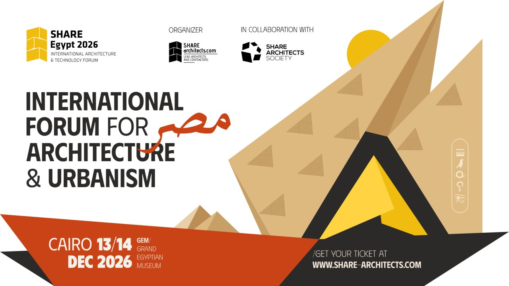
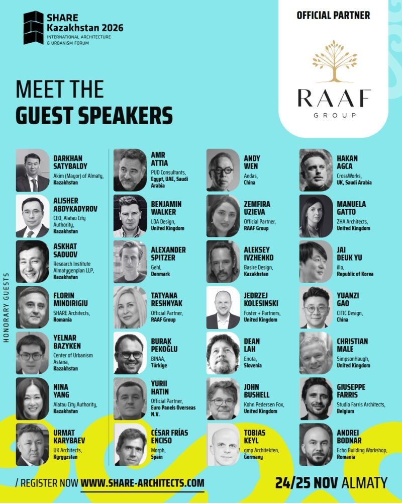
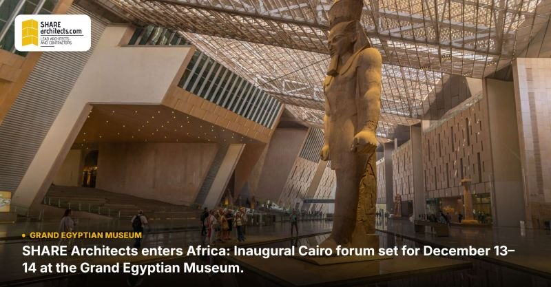
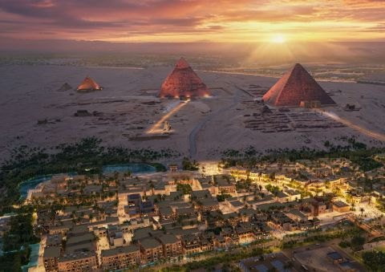

Leadership
Prof. Dr. Amr Attia
A great leader builds beyond today. He carries PUD into its next chapter, from the Pyramids Plateau to Makkah, and teaches the planners who come next.

Prof. Dr. Amr Attia leads PUD Consultants. He joined the practice in 1991, became CEO in 2005 and co-founded PUD Saudi in Riyadh in 2018. His work includes planning frameworks for Jeddah, AlUla, the holy sites of Makkah and Egypt's New Administrative Capital, and the Giza Pyramids tourism master plan, where he guided the local Egyptology and heritage experts working with WATG.
He is Professor of Urban Planning at Ain Shams University and holds a PhD from UCL on tourism policy on Egypt's North West Coast. He was selected as an Eisenhower Fellow in 2007, spent 2011 to 2020 at AECOM Arabia, rising to Principal Director, and was Vice President at WATG from 2020 to 2023.
He spoke at SHARE Romania in Bucharest in 2025 and SHARE Georgia in Tbilisi in September 2026. He speaks at SHARE Kazakhstan in Almaty on 24 and 25 November 2026, and he is Board Chairman of SHARE Egypt, the first SHARE forum in Africa, at the Grand Egyptian Museum on 13 and 14 December 2026.
Selected work
 MasterplanPyramids Plateau Destination Master PlanGiza · 2024-2025
MasterplanPyramids Plateau Destination Master PlanGiza · 2024-2025 MasterplanNew Administrative Capital: Strategic Advisory, Phases 2 to 4New Administrative Capital · 2025
MasterplanNew Administrative Capital: Strategic Advisory, Phases 2 to 4New Administrative Capital · 2025 Mixed useSumou Boulevard, New CairoMostakbal City, New Cairo · 2026
Mixed useSumou Boulevard, New CairoMostakbal City, New Cairo · 2026 LandscapeJabal Thabeer Park (Mina, Makkah)Mina, Makkah · 2025
LandscapeJabal Thabeer Park (Mina, Makkah)Mina, Makkah · 2025
MasterplanKhaybar Heritage Area Master PlanKhaybar, AlUla · 2020 MasterplanMarina El AlameinNorth Coast · 1985-1997
MasterplanMarina El AlameinNorth Coast · 1985-1997Roles and projects
- 2026Member of the SHARE Egypt 2026 organising board and its Board Chairman. The forum brings SHARE Architects to Africa for the first time. Source
- 2025Jabal Thabeer Park, Makkah: concept master plan by PUD Consultants with Gillespies, Systematica and Studio 4215, for Kidana. Source
- 2026According to PUD, the practice led the international Steering Committee advising ACUD on the strategic master plan for Phases 2 to 4 of Egypt's New Administrative Capital, with Dar Al-Handasah as lead designer. Source
- 2026The Eisenhower Fellowships 2026 profile of Prof. Dr. Amr Attia records planning frameworks for Jeddah, Egypt's New Administrative Capital, AlUla and the holy sites of Makkah. It says the AlUla framework and guidelines now work as binding planning instruments within a development programme above $15 billion. Source
- 2010Principal in charge of the Regional Vision and Tourism Development Plan for Egypt's North West Coast (1,680 km2), with WEP (Germany) and think-GDC (Seattle) for the Tourism Development Authority and GOPP. Source
- 2009 to 2010Co-founder of K2C (Kansas to Cairo), an online architecture studio in the Second Life virtual world linking Ain Shams University and the University of Southern California School of Architecture, with U.S. State Department funding. Architectural Record covered it in June 2010. Source
- 2002 to 2004Technical coordinator between Ain Shams University and the General Organization for Physical Planning (GOPP) for guiding plans for 53 Egyptian villages (April 2002 to April 2004). Source
- Part of the team that won first prize in the international competition to design the Arab World Participation Galleries at the 56th Frankfurt Book Fair.
On stage

SHARE Egypt 2026 organising committeeBoard Chairman of SHARE Egypt. The forum brings SHARE Architects to Africa for the first time.
SHARE Egypt 2026, Grand Egyptian MuseumInternational Forum for Architecture and Urbanism, Cairo, 13 and 14 December 2026.
SHARE Kazakhstan 2026, AlmatyGuest speaker. Master Debate on high-rise buildings in Almaty on 24 November, and the session Good Living and Working on 25 November.
SHARE Architects enters AfricaAnnouncement of the first SHARE forum on the continent, inside the Grand Egyptian Museum.- 2026Chair · Upcoming SHARE Egypt 2026, International Forum for Architecture and Urbanism: Master Debate, "Shaping Egypt's Horizons: Decades of Excellence in Urban Development" · Grand Egyptian Museum, Giza, Cairo The programme includes a tribute to PUD's founder, Prof. Dr. Abdallah Attia. Source
- 2026Speaker · Upcoming SHARE Egypt 2026: Welcome message and Closing Messages · Grand Egyptian Museum, Giza, Cairo Source
- 2026Panelist · Upcoming SHARE Kazakhstan 2026: Master Debate, High-Rise Buildings in Almaty, and the session Good Living and Working · Almaty, Kazakhstan Source
- 2026Speaker SHARE Georgia 2026: Keynote Plenary Session, and the talk "Making a New Capital City Work" on Egypt's New Administrative Capital and Sumou Boulevard · Pullman Tbilisi Axis Towers, Tbilisi, Georgia Source
- 2025Panelist Salon Al-Shams special session, Ain Shams University Faculty of Engineering: panel "Tourism Master Plan at the Giza Pyramids" · Faculty of Engineering, Ain Shams University, Cairo Transforming a World Wonder: A Master Plan Framework for the Giza Pyramids Source
- 2025Speaker SHARE Romania 2025, International Architecture Forum · Radisson Blu, Bucharest, Romania Planning for Sustainable Tourism Development: Leave No Place Behind (PUD's contributions to developing the coasts of Egypt and Saudi Arabia: lessons learnt) Source
- 2023Moderator Narrative PR Summit 2023 ("Egypt Forever Forward"): panel "Nation Branding and Regional Integration" · Soma Bay, Red Sea, Egypt Nation branding and regional integration Source
- 2023Speaker UIA 2023 World Congress of Architects (28th), listed speaker in the UIA Sustainable Development Goals Commission programme · Copenhagen, Denmark Source
- 2009Panelist U.S. Department of State (Bureau of International Information Programs) virtual panel "Architectural Design and International Collaboration in Virtual Worlds" · Held online in Second Life (Annenberg Island) Architectural collaboration across borders in Second Life Source
- 2004Speaker Ain Shams University symposium "Ain Shams University in the Service of Society and Environmental Development: Reality and Hope" · Ain Shams University, Cairo The role of Ain Shams University in serving society and the environment in the field of urban planning (working paper) Source
Recognition
- 2007Selected as an Eisenhower Fellow (Egypt 2007) in the Common Interest Program on the Challenges of Urbanization, visiting more than 25 cities in the United States. Source
- 2010Attended the Aspen Institute Seminar on leadership, values and the good society (August 2010), with an Aspen Institute McLaughlin Scholarship. Source
- 2017Listed as a member of the Eisenhower Fellowships Global Network Council (Egypt '07) in the 2017 annual report. Source
- 2025Jabal Thabeer Park, Makkah: first runner-up, Future Landscapes (Unbuilt), Landscape Middle East Awards 2025. Awarded to Gillespies for its concept masterplan, prepared with PUD Consultants, Systematica and Studio 4215 for Kidana. Source
- 2026Jabal Thabeer, Makkah: shortlisted, Pineapple Awards 2026, as part of the same project team. Source
- Selected first prizesNasser Memorial Civic Centre, Egypt; Planning of Luxor City and its Region, Egypt; Al-Ashish Urbanized Communities, Kuwait; Tut Amun Village Hotel, Aswan, Egypt. As listed in SHARE Architects' speaker announcement.
The Giza Pyramids master plan



Research and teaching
- 2025Guided the local Egyptology and heritage experts on WATG's tourism master plan framework for the Giza Pyramids, commissioned by the Egyptian government in 2024. WATG led the plan and PUD is the cultural-heritage specialist. The framework was presented to the Ministry of Tourism in December 2025. Source
- 2022Co-author of the book chapter "Partnerships for Sustainable Tourism Development in the Cultural Heritage Sites" (with Reham Kamel El-Khadrawy and Rowaida Rashed) in Conservation of Architectural Heritage, Springer. Source
- 2021Author of the WATG insight article "Rejuvenation or decline? A challenge for real estate developers in the Middle East" (1 June 2021). Source
- 2016Author of "Utilizing Information Technologies in Urban Renewal Initiatives: Opportunities and Constraints", Humanities and Social Sciences Journal 4(1), 5 to 15. Source
- 2015Seminar organiser and member of the organising and scientific committees of "Linear Parks and Urban Ambiances" in Cairo, part of the Imhotep programme between Ain Shams University and the Grenoble School of Architecture (Cresson laboratory). Source
- 2014Co-author of "Spatial Planning and the Need for Spatial Planning Support Systems: Urbanism as Example", Journal of Al-Azhar University Engineering Sector 9(32). Source
- 2012Co-author of "Strategic City Planning in Egypt", Journal of Al-Azhar University Engineering Sector 7(24). Source
- 2007Author of "The Development of Urban Settlements and the New Approaches for Measuring Quality of Life Indicators", Journal of Al-Azhar University Engineering Sector (in Arabic), with A. Mostafa. Source
- 2003Co-editor of "The Grand Museum of Egypt: International Architecture Competition", Volumes I and II, published by the Egyptian Ministry of Culture. Source
- 2003Co-author (with Mohamed Salheen) of "Urban Transitional Zones in Greater Cairo Region: Problems and Opportunities", 39th ISoCaRP International Congress, Cairo, 19 to 22 October 2003. In April 2003 he also co-authored three papers (in Arabic) for the Al-Azhar Engineering Seventh International Conference. Source
- 1999PhD thesis on implementing tourism policy on Egypt's North West Coast, evaluating pilot tourism projects including Marina El Alamein (UCL Discovery, open access). Source
- 1994MSc thesis "Planning for Sustainable Tourism Development: The Case of Marina Al-Alamein Project in the North West Coast Region of Egypt" (unpublished, University of London). Source
Full career and education
- 1991BSc in Architecture and Urban Design, Faculty of Engineering, Ain Shams University, Cairo.
- 1994Master's degree, University College London (Development Planning Unit); thesis: "Planning for Sustainable Tourism Development: The Case of Marina Al-Alamein Project in the North West Coast Region of Egypt".
- 1999PhD, University of London (UCL); thesis: "Planning for sustainable tourism development: an investigation into implementing tourism policy in the North West coast region of Egypt", available open access in UCL Discovery. Source
- 1991 to 2011, and since 2020Joined PUD Consultants in 1991 as planner and urban designer; Vice President and CEO from 2005 to 2011; leads the practice again today. Source
- 1991 to presentAin Shams University: demonstrator (1991), teaching assistant (1994), assistant professor (1999), associate professor (2005) and Professor of Urban Planning (since 24 November 2016). Source
- 2001 to 2006Managing Director of the Consultancy Unit for Planning and Urban Design (CUPUD), Ain Shams University, and authorised representative of the university in the National Programme for the Development of Rural Strategic Plans (supported by UN-Habitat, over 400 Egyptian villages). Source
- 2002 to 2004Member of the Technical Committee of the Grand Egyptian Museum, coordinator of the technical committee for planning and landscaping of the area around the museum, and involved in organising and managing its UNESCO-sponsored, UIA-patronised international architecture competition. Source
- 2002 to 2005Visiting Professor, Arab Academy for Science, Technology and Maritime Transport.
- 2011 to 2020AECOM Arabia, Saudi Arabia: senior project manager, rising to Principal Director, Design, Planning and Economics. Projects included the Jeddah Stormwater Drainage Programme and the Jeddah Spatial Framework Plan.
- 2018PUD Saudi was co-founded in Riyadh by Prof. Dr. Amr Attia.
- 2020 to 2023Vice President, Strategic Development, Middle East and Africa, WATG. Source
- 2025Board Member, Society of Egyptian Architects (SEA).
- 2026Board Chairman of SHARE Egypt 2026, the first SHARE forum in Africa. Source
In the media
- 2026SHARE Architects · SHARE Architects Expands to Africa: SHARE Egypt 2026 Announced
- 2026Eisenhower Fellowships · Eisenhower Fellows: Amr Attia, Egypt 2007
- 2026Gillespies; Systematica · Landscape Middle East Awards 2025: Jabal Thabeer Park, Makkah
- 2025Construction Week Online · Egypt: WATG completes masterplan framework for the Giza Pyramids (18 December 2025)
- 2025WATG · Tourism Master Plan at Giza Pyramids
- 2025Ain Shams University, Faculty of Engineering · News: Tourism Master Plan at the Giza Pyramids (Salon Al-Shams panel)
- 2023Al Motawwer · Narrative PR Summit 2023 to Explore Nation Branding and Regional Integration (5 October 2023)
- 2021WATG · Rejuvenation or decline? A challenge for real estate developers in the Middle East (by Dr. Amr Attia, 1 June 2021)
- 2010Arch Virtual (reporting Architectural Record) · Architectural Record features 'Kansas to Cairo' Second Life project (22 June 2010)
- 2010Arch Virtual · Barack Obama's 'Kansas to Cairo' vision being realized in Second Life (14 March 2010)
- 2010Trojan Family Magazine (USC) · Winter 2010 issue (mentions the Ain Shams / USC virtual-world studio)
- 2009Arch Virtual · U.S. Department of State to host panel discussion: Architectural Design and International Collaboration in Virtual Worlds (13 October 2009)